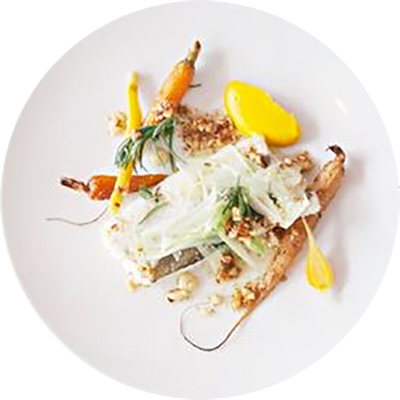
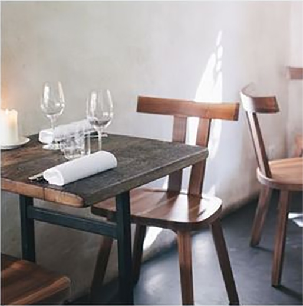
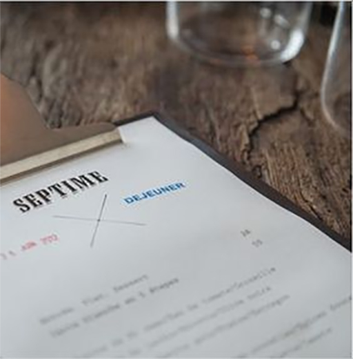
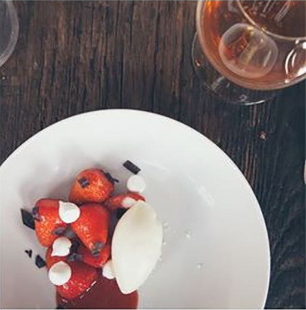
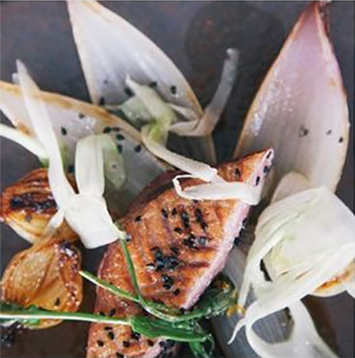

merlu de ligne
carrottes nouvelles
épice douces

Ambiance brute, table en bois ancien, béton ciré au sol. La salle lumineuse est très agréable, elle est ouverte sur la cuisine. Au fond de la salle, une jolie table ronde à vue sur une rue sur un petit jardin parisien. À l'entrée un joli sol en carreaux de céramique, quelques plumes de paon et de bien jolies bouteilles anciennes... Le nombre des tables est limité, ce qui rend le restaurant très appréciable, mais aussi très prisé !

Service toujours impeccable. L'ensemble de la table est servi rapidement, la corbeille de pain régulièrèment pleine, les serveurs expliquent le menu avec beaucoup d'attention et ont d'excellents conseils pour marier mets et vins. On reconnaît l'ensemble de l'équipe à ses tabliers bleus.

Le dressage c'est un peu la marque de fabrique du chef, avec la cuisine bien sûr. Ses plats sont de vrais petits tableaux de maître. Une belle recherche dans les formes et les couleurs très agréables visuellement.

Last but not least, le goût. C'est le point le plus important, et tellement bien ajusté ici. Les papilles voltent et virevoltent au rythme des saveurs si justes, des cuissons si parfaitement maîtrisées. Chaque plat, chaque association, rien n'est laissé au hasard, de l'élément principal à la toute petite feuille d'herbe délicatement posée sur le dessus du plat. Emerveillement des sens et frénésie de créativité sont au rendez-vous.